Step 1:
The closed loop gain of negative feedback amplifier is,
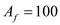.
The open loop gain of negative feedback amplifier is,
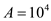.
The closed loop gain is,
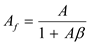.
Substituting  for
for  and
and  for
for  in the equation.
in the equation.
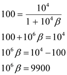
Solve for feedback factor.
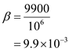
Thus, the feedback factor of the negative-feedback amplifier  is 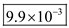.
is 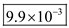.
Step 2:
Now the open loop gain of negative feedback amplifier  is,
is,
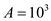.
The closed loop gain is,
.
Substituting  for 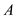 and 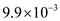for
for 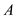 and 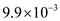for  in the equation.
in the equation.
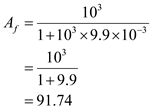
Thus, closed loop gain of the negative feedback amplifier  is 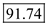.
is 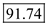.
Step 3:
The percentage reduction in the closed loop gain is,
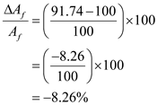
Thus the percentage change in the closed loop gain of a negative-feedback amplifier  is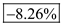.
is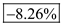.